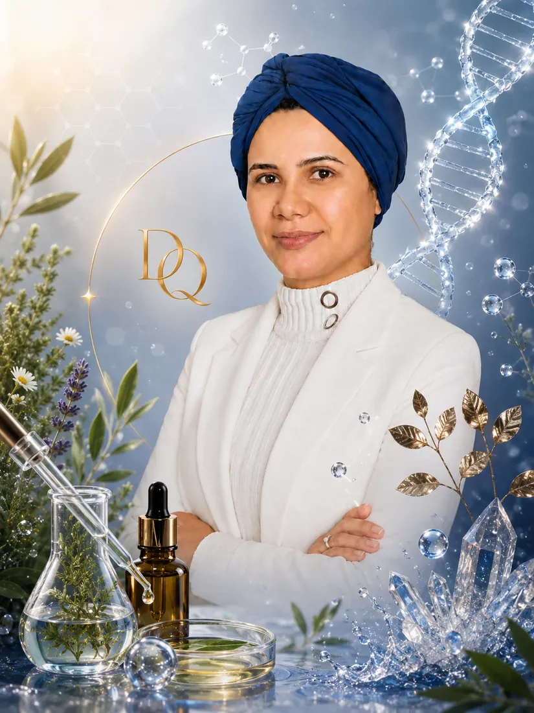

Sou Danielle Brito, especialista em regeneração cutânea, com mais de uma década de experiência atuando na área da estética clínica.
Minha formação inclui graduação em Estética e Cosmética pela UNISUAM, pós-graduação em Fitoterapia Aplicada à Estética e Prática Esportiva, além de pesquisas envolvendo nanotecnologia, aromaterapia e regeneração da pele.
Minha trajetória também foi construída através de estudos realizados em parceria com instituições de excelência como Fiocruz, IME e IBex.
Ao longo da minha carreira desenvolvi protocolos próprios voltados para regeneração da pele, recuperação de melasma, tratamento da acne, terapias corporais e terapias capilares.
Atualmente também atuo com consultoria científica em dermocosméticos e skincare regenerativo online para pacientes de todo o Brasil.

Transformar ciência em confiança e cuidado.
Cada paciente possui uma história única, uma pele única e necessidades específicas.
Por isso desenvolvo protocolos individualizados baseados em avaliação detalhada, evidências científicas e acompanhamento contínuo.
IME – Instituto Militar de Engenharia
Fiocruz
IBex
Pesquisas desenvolvidas integrando ciência, inovação e prática clínica.
Estudos etnofarmacológicos de óleos essenciais com atividade larvicida contra o mosquito Aedes aegypti.
Revista Semioses – Volume 11 – Número 01 – 2017.
Coautoria com pesquisadores do IME, Fiocruz e IBex.
Durante minha pós-graduação em Fitoterapia Aplicada à Estética e Prática Esportiva desenvolvi meu Trabalho de Conclusão de Curso com foco em Neuroplasticidade Mitocondrial.
Esse estudo aprofundou minha compreensão sobre o potencial do resveratrol na saúde celular, regeneração tecidual e proteção antioxidante.
Até hoje esse conhecimento influencia diretamente os protocolos que utilizo em consultório.